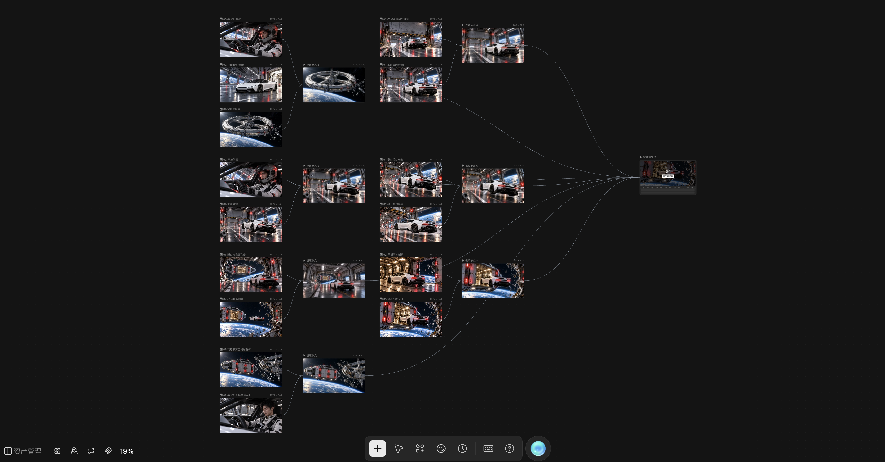

明确主体与场景
围绕车辆、驾驶者和空间站构建参考素材，统一科幻环境与主视觉方向。
AIGC VIDEO / 科幻短片
以跑车与空间站构建科幻视觉，通过参考图组织、分镜生成与视频合成，完成 AIGC 短片创作。
前往 Liblib 观看 ↗FINAL FILM
创作主题
以白色跑车、驾驶者与空间站为主要视觉元素，结合地球背景、舱体结构和冷暖光线，形成具有电影感的科幻场景。
AIGC 创作能力
制作画布呈现了参考图片、多个视频生成节点与最终合成节点的连接关系。通过组织车辆、人物和场景素材，将镜头级生成结果汇聚成完整作品。
CREATIVE WORKFLOW
围绕车辆、驾驶者和空间站构建参考素材，统一科幻环境与主视觉方向。
将不同车辆视角、舱内外环境和人物镜头分开组织，形成可追踪的素材关系。
在画布中为视频节点关联输入素材，使静态视觉设定进入动态镜头制作。
把多个生成结果连接到合成节点，形成从素材到镜头、再到成片的制作结构。
PRODUCTION CANVAS

制作过程依据提供的画布截图介绍，未标注截图中无法确认的模型、参数或制作时长。